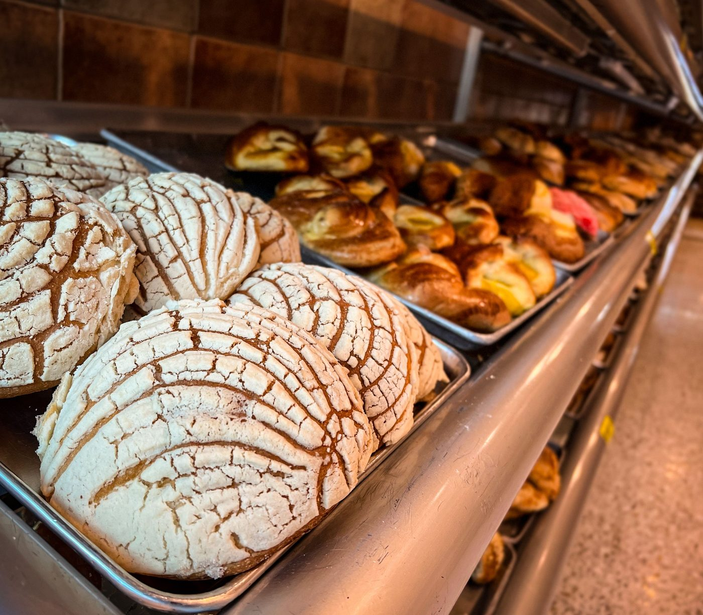

Delectable Delights By Tarolyn
A family-owned cottage bakery in Pensacola, making custom cakes from scratch and winner of the PNJ 2026 pastry bracket.

About
Delectable Delights By Tarolyn is a family-owned cottage bakery in Pensacola, run by Tarolyn Street. Cakes are made from scratch, and the bakery won the PNJ 2026 pastry bracket as Pensacola's best pastry. The menu covers custom cakes, cupcakes, cookies, pies, and pastries, with vegan and sugar-free options on request, plus delivery and takeout.
Custom cakes and bakes
Pensacola's best pastry, per the PNJ 2026 pastry bracket
Delectable Delights By Tarolyn won the PNJ 2026 pastry bracket, named Pensacola's best pastry. Orders go by phone, since no public email is published. Call (850) 375-3417 to ask about a custom cake.
Gallery


All gallery photos are stock photos, labeled as such. They show baked goods in a bakery case, not this bakery's custom cakes.
Visit
Address: 901 Massachusetts Ave Ste 163, Pensacola, FL 32505
Hours: Monday to Friday 9:00 AM to 6:00 PM, Saturday 9:00 AM to 2:00 PM, Sunday closed.
Phone: (850) 375-3417
Contact
Delectable Delights By Tarolyn serves Pensacola, FL. Questions? Call (850) 375-3417.